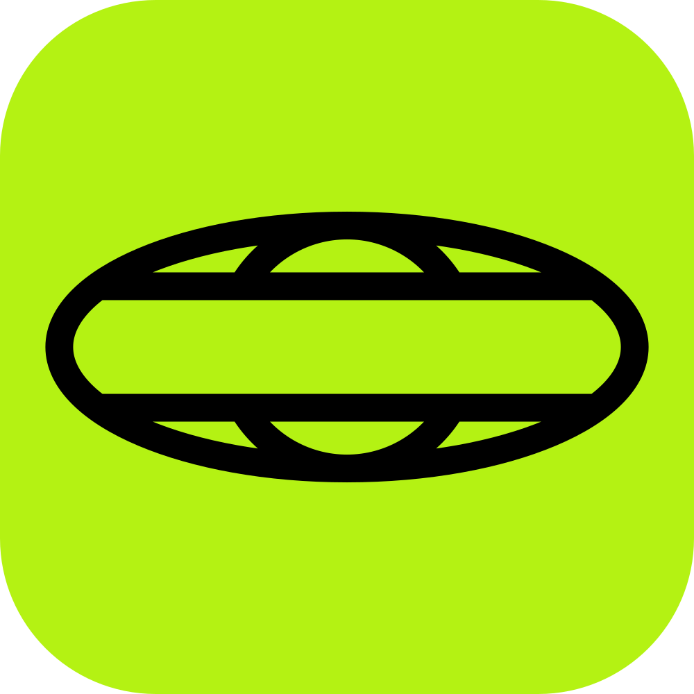

Design system medido no site · plastic.audio/clips · medido em 28/11/2026 (desktop 1440×900 e mobile 390×844)
Clips
Landing de um app desktop que transforma uma música em vídeos verticais com letra. Fundo quase preto, uma grotesca só (Uncut Sans 400) em tamanhos enormes com tracking fechado, um acento ácido (#B4F213) e cada seção demonstrando o produto com uma interface falsa em CSS que roda em loop no tempo da música (124 BPM = 484 ms por batida).
Princípios
Mostrar, não descrever: cada seção traz um pedaço da interface do app rodando em loop (waveform, exportação, gráfico de resultado), feito em HTML e CSS, não em vídeo.
Uma família, um peso: Uncut Sans 400 do título de 144 px à nota de 14 px. Hierarquia só por tamanho, cor (#EDEDED × #A8A8A8) e tracking (-0.02em nos grandes).
Um acento, raro: verde-volt #B4F213 só em compra e no ícone; lavanda #CB98F5 só em foco da barra e no destaque de palavra; laranja #F2592E só no recorte da música.
Tudo no tempo da música: as animações de demonstração usam múltiplos de uma batida de 484 ms (124 BPM).
Escuro com uma virada clara: a seção de preço inverte para papel #F0F0EE com texto #0A0A0A.
Grau de confiança
cor exata (variáveis CSS do autor em .lp + estilos computados)
tipografia exata no desktop (CSS do autor e tamanhos medidos em 1440); a fonte Uncut Sans não está no Google Fonts, o preview usa Hanken Grotesk como substituta
espaço exato: escala do autor em múltiplos de --u (18 px no desktop, 16 px no mobile)
motion exato: @keyframes, durações e curvas lidos no CSS; o hero de rolagem tem keyframes calculados em JS (fórmulas lidas no código)
componentes repouso e hover medidos; foco lido no CSS
Nomes dos papéis (bg, surface-*, accent) são meus; a nota traz o nome da variável no site (--bg, --surface, --volt…).
O site não tem variáveis em :root: elas vivem em .lp (a página) e .cz (o banner de cookies). A barra (.pn) usa cores escritas à mão.
Black Friday ativa na medição (html.sale): preço $59 no lugar de $99. Textos com os dois preços aparecem colados no resumo da medição.
Archivo Black e IBM Plex Mono são carregadas e não aparecem em nenhum texto visto: custo sem uso (provavelmente de outra página do site ou do editor de efeitos).
Marca

Lyric video maker for Mac and Windows.
Clips vende teste no lugar de aposta: corta a música inteira em vídeos no ritmo para o artista testar todos e pagar anúncio só no que funcionou. O visual é de ferramenta séria e escura, como um editor de vídeo, e a página prova cada promessa com o próprio app funcionando em miniatura.
Personalidade
Ferramenta, não festa ← fundo #0A0A0A, uma fonte, um peso, ícones de traço fino
Confiante e direto ← títulos de 72–144 px com ponto final, frases de duas batidas
Musical ← tudo pulsa a 484 ms; letras de karaokê em Anton amarelo sobre os vídeos
Honesto com números ← tabela comparando preço por ano com concorrentes nominais, preço repetido em cada CTA
Voz e texto
Duas frases curtas em vez de uma longa: “Song in, ads out.” · “Test first. Then spend.”
Problema dito como cena real: “Making 15 videos takes all evening. So you cut two and pray.”
Objeção respondida antes de aparecer: “Is my unreleased song uploaded anywhere? No.”
Imagem e ícones
Vídeos verticais 9:16 de artistas reais com letra em Anton amarela por cima; sempre em loop, mudos
Interface do app desenhada em HTML/CSS (não print): waveform colorida por parte da música, linhas de exportação, gráfico de custo por resultado
Uma paisagem 3D de lavanda atrás da janela do app no hero (imagem, não WebGL)
Ícones SVG de traço (49 de 61), 11–18 px; o único ícone cheio é o do app
Não fazer
Segundo acento competindo com o verde-volt em botão
Peso bold na grotesca: o site inteiro é 400
Gradiente decorativo: o único gradiente é o céu da cena das 7 PM
Animação fora do tempo: as demonstrações seguem a batida de 484 ms
Cor
bg#0A0A0A--bg · página, texto do botão volt, theme-colorsurface-1#1E1E1E1.19:1 s/ fundo--surface · painéis de demonstração (.fvis), anel em volta das miniaturassurface-2#2727271.33:1 s/ fundo--surface-2 · fundo dos clipes 9:16 antes do vídeo carregarsurface-3#1414141.07:1 s/ fundojanela do app (.appwin)surface-btn#2424241.28:1 s/ fundobotão escuro “Try it free” (hover #2E2E2E)text#EDEDED16.91:1 s/ fundo--ink · títulos e texto principaltext-soft#CFCFCF12.71:1 s/ fundolinks da barra em repouso (hover #FFFFFF)text-muted#A8A8A88.33:1 s/ fundo--ink-2 · parágrafos de apoio, legendas, rodapé · 8,3:1 sobre #0A0A0Atext-fine#A39F987.51:1 s/ fundolinha de checkout segurolinergba(237, 237, 237, 0.2)--line · contorno de chip, pílula da barra, slot tracejadoline-2rgba(237, 237, 237, 0.1)--line-2 · divisória de seção (.rule) e de pergunta (.q)accent#B4F21314.76:1 s/ fundo--volt · comprar, ícone do app, ponto de batida, playhead · 14,8:1 com #0A0A0Aaccent-hover#C6F84A15.96:1 s/ fundohover do botão volton-accent#0A0A0A1.0:1 s/ fundo--on-voltlavender#CB98F58.81:1 s/ fundo--lavender · anel de foco da barra, palavra cantada no karaokê, linha vencedora do gráficopaper#F0F0EE17.35:1 s/ fundo--paper · seção de preço invertidalyric#F5EE0016.13:1 s/ fundoletra em Anton sobre os vídeos (cor do conteúdo de demonstração, não da interface)signal#F2592E5.89:1 s/ fundorecorte da música na waveform (fundo a 8% e contorno a 60%)scene#3B33551.69:1 s/ fundocor de espera da paisagem de lavanda do hero (.lav)
sans'Uncut Sans', 'Hanken Grotesk', 'Helvetica Neue', Helvetica, Arial, sans-serifUncut Sans 400, arquivo próprio do site (uncut-sans-regular.woff2). Hanken Grotesk é a substituta aberta do preview.
lyric'Anton', Impact, sans-serifsó a letra cantada dentro dos vídeos de demonstração
hook'Arimo', Arial, sans-serifsó a frase de gancho (hook) dentro dos vídeos, 700 em caixa alta
posterclamp(56px, 10vw, 144px) · lh 1.02 · ls -0.02em · 400 · sans.poster · “$59, paid once” na seção de preço
Song in, ads out.
display88px · lh 1.02 · ls -0.02em · 400 · sansh1.hero-t · 44px no mobile · centralizado, quebra equilibrada
Lyric video maker for Mac and Windows.
statement72px · lh 1.02 · ls -0.02em · 400 · sansh2.statement · 34px no mobile · max-width 11em, text-wrap: balance
Song in, ads out.
featureclamp(40px, 3.125vw, 45px) · lh 0.95 · ls -0.015em · 400 · sansp.h1 · “Ads in minutes” · 28px no mobile
Song in, ads out.
quotecalc(var(--u) * 40 / 18) · lh 1.2 · ls -0.015em · 400 · sansp.mq · depoimento · 40px em 1440, 28px no mobile
Song in, ads out.
ledecalc(var(--u) * 1.25) · lh 1.2 · ls 0 · 400 · sans.h2.hero-d · 22,5px em 1440, 20px no mobile · max-width 36u, balance
Song in, ads out.
titleclamp(22px, 1.8vw, 26px) · lh 1.15 · ls 0 · 400 · sansp.h2 · “Drop your song”, perguntas do FAQ
Song in, ads out.
bodyvar(--u) · lh 1.3 · ls 0 · 400 · sansp.body · --u = clamp(15px, 1.25vw, 18px), 16px no mobile
Find the part of your song that sells it. Drop in a song and Clips cuts every part into vertical videos, on the beat.
paraclamp(16px, 1.25vw, 18px) · lh 1.4 · ls 0.01em · 400 · sansp.small.para · cor #EDEDED a 87%
Song in, ads out.
nav16px · lh 19px · ls 0 · 400 · sans.pn · barra fixa, cor #CFCFCF
Song in, ads out.
smallcalc(var(--u) * 0.875) · lh 1.2857 · ls 0.01em · 400 · sans.small · 15,75px em 1440 · notas, rodapé, legenda
Song in, ads out.
fine14px · lh 20px · ls 0 · 400 · sansp.sco · checkout seguro · 13px no mobile
Song in, ads out.
lyric84px · lh 1.09 · ls 0 · 400 · lyric.sh5-ly · na página o tamanho é 47.11cqw (relativo à largura do clipe, container-type: inline-size) e cada palavra tem o seu; 84px é a amostra do preview
Song in, ads out.
hook15px · lh 1.2 · ls 0.02em · 700 · hook.sh5-hk · na página 4.89cqw do clipe (≈15px num clipe de 300px)
Song in, ads out.
Espaço
tie · 9px
pair · 18px
gs · 27px
row · 36px
group · 54px
section · 72px
s96 · 108px
s128 · 144px
gutter · 36px
Layout
sidemax(36px, calc((100% - 1440px) / 2 + 36px))--side · margem lateral; o conteúdo vai até 1368px
unitclamp(15px, 1.25vw, 18px)--u · tudo é múltiplo dele (texto e espaço)
statement11emlargura máxima dos títulos de seção
ledecalc(var(--u) * 36)largura máxima do parágrafo do hero (648px)
screen900px.screen · seções com altura de uma tela
section-pad108px 36pxpadding de cada section (s96 em cima e embaixo)
grid-featuresrepeat(4, 1fr) / gap 18px.bens · quatro benefícios
grid-steps2 colunas / gap 72px 18px.grid2 · os quatro passos de “Song in, ads out.”
grid-tiersrepeat(3, 1fr) / gap 18pxplanos de preço
faq1fr 1fr / column-gap 18px.q · pergunta à esquerda, resposta à direita, divisória em cima
hero-runway230lvh.lstage.pin · pista da revelação do app; a animação consome 90% de uma tela
base0.2sfundo e sombra de botão, opacidade de controles
menu0.22smenu da barra (abrir .26s)
modal0.28sjanela de download e moldura do player
beat0.484suma batida a 124 BPM: base de todas as animações de demonstração
bar1.936s4 batidas (um compasso)
phrase7.742s16 batidas (4 compassos): ciclo da waveform
stagger word0.484s
stagger star0.07s
scroll: {"smooth": false}
Catálogo de animações — clique numa demonstração para repetir
hero-revealrolagem · CSS scroll-driven + keyframes gerados em JS
Ao rolar, a paisagem de lavanda sobe e se alarga até a borda da tela, e a janela do app sai de 88% e desliza para o centro. Em 90% de uma tela de rolagem o hero vira demonstração.
gatilhoscroll(root block), animation-range 0 → 90% da altura da tela
As três pílulas da barra parecem gotas ligadas: um fundo de vidro escuro (rgba(30,30,30,.76) + blur 24px) recebe uma máscara SVG com círculos nas pontas e arcos côncavos fazendo o “pescoço” entre os segmentos.
gatilhocarga e redimensionamento
alvo.pn .pn-shape
duração—
easing—
feito comJS + CSS mask
fonteindex.html: cálculo de rf (raio do filete) entre segmentos
/* para cada vão entre segmentos de altura H=56 e raio R=28: */
const rf = (hd*hd/(R-t) - R - t) / 2; // raio do arco que liga as duas pílulas
d += `M${pax} ${pay}A${rf} ${rf} 0 0 0 ${pbx} ${pay}L${pbx} ${H-pay}A${rf} ${rf} 0 0 0 ${pax} ${H-pay}Z`;
shape.style.mask = `url("data:image/svg+xml,${encodeURIComponent(svg)}") 0 0/100% 100% no-repeat`;
menu-openestado · CSS transition
O menu de apps cai 6px e cresce de 98% a partir do ícone, com fade rápido; a opacidade termina antes do movimento.
O botão de vidro “Play with sound” aparece crescendo de 90% sobre o vídeo.
gatilhocarga
alvo.ps-btn
duração300ms
easingease
feito comCSS animation
fonte@keyframes psIn
.ps-btn { animation: psIn .3s ease both }
@keyframes psIn { from { opacity: 0; transform: translateX(-50%) scale(.9) } to { opacity: 1; transform: translateX(-50%) } }
word-on-beatloop · CSS @keyframes com steps(1)
A letra troca palavra por palavra no tempo da música, como corte de edição. Todas as palavras ficam empilhadas no mesmo lugar e cada uma acende por 1/6 do ciclo.
Na linha da letra, a palavra cantada ganha fundo lavanda e texto escuro por uma batida; as outras ficam em #A8A8A8. Mostra a sincronia palavra por palavra.
Exportando 15 vídeos: a barra geral enche em 64% do ciclo; cada miniatura recebe uma linha de progresso e, ao terminar, um ✓ verde que salta (40% → 120% → 100%). As miniaturas terminam em escada, 4% do ciclo uma depois da outra.
gatilhosempre
alvo.xbar i, .prog, .shade, .tick (xs0…xs14, xp0…, xt0…)
duração10s por ciclo
easinglinear (barra) · ease-out (✓)
feito comCSS animation
fonte@keyframes xall, xpN, xsN, xtN
@keyframes xt3 { 0%,18% { opacity:0; transform:scale(.4) } 20% { opacity:1; transform:scale(1.2) }
22%,90% { opacity:1; transform:scale(1) } 94%,100% { opacity:0; transform:scale(.4) } }
/* o item n usa as porcentagens deslocadas em 4n%: um gerador escreve os 15 */
waveform-pickloop · CSS @keyframes
No recorte laranja da música, um playhead volt atravessa em 16 batidas, com brilho que pulsa a cada batida; as barras já tocadas acendem (#F66B44 → #F2592E) e os pontos de batida embaixo piscam em branco.
Gráfico de custo por resultado: as barras crescem juntas (36% → 48% do ciclo), a linha vencedora acende em lavanda, as outras apagam para 40%, a etiqueta “Winner” salta e um brilho atravessa a barra vencedora.
gatilhosempre
alvo.chart .track i, .crow.best, .crow:not(.best), .wtag, ::after
duração8s por ciclo
easingcubic-bezier(0.2, 0.8, 0.2, 1) (crescer) · ease-out (o resto)
Na seção “Making 15 videos takes all evening”, um relógio gira (ponteiro dos minutos em 3s, das horas em 18s), o horário troca de 7 PM até a madrugada, o céu escurece em três camadas e estrelas aparecem: a noite inteira passa em 18 segundos.
.mh { animation: mh 3s linear infinite } @keyframes mh { to { transform: rotate(360deg) } }
.hh { animation: hh 18s linear infinite } @keyframes hh { from { transform: rotate(210deg) } to { transform: rotate(390deg) } }
.star { animation: star 18s linear infinite } @keyframes star { 0%,40% { opacity:0 } 55% { opacity:.8 } 70% { opacity:.35 } 82% { opacity:.9 } 100% { opacity:0 } }
director-demoloop · CSS @keyframes (coreografia de 12s)
Um cursor falso entra pela direita, pega a frase de gancho no topo do clipe, arrasta para baixo (14% → 72,5%), solta, abre o seletor e troca a camada de palavras por linhas. A interação inteira é uma linha do tempo em CSS, sem JS.
nav-pill.pn-in · as três pílulas ficam dentro de segmentos de 56px com 6px de folga; o fundo de vidro escuro que as liga é uma máscara SVG (ver animação nav-metaball)
chip.chip · partes da música com ✓ (Verse 1, Pre, Chorus…)
✓ Verse 1✓ Pre✓ Chorus
panel.fvis · palco de cada demonstração; 340px na variante .sm
Bad to You 124 BPM · 3:52
clip.clip · vídeo vertical com letra; o texto dentro escala em cqw
SO
tier.tier · plano de preço, só existe dentro da seção .paper
$59For your own music
glass-button.ps-btn · “Play with sound” sobre vídeo; círculo branco de 32px com ▶ à esquerda
faq-row.q · pergunta em text.title #EDEDED, resposta em text.body #A8A8A8
Another subscription?No. $59 once, with free updates.
Stack e ferramentas
ferramenta
versão
para quê
evidência
HTML + CSS escritos à mão
—
página inteira, demonstrações em CSS puro (106 @keyframes)
882 regras em <style> inline no index.html; nenhuma biblioteca detectada (tech.json)
CSS scroll-driven animations
animation-timeline: scroll(root block)
revelação do app no hero
4 regras em .lstage.pin; ligado só se CSS.supports('animation-timeline', 'view()')
JavaScript próprio (componente DC)
—
monta o HTML a partir de window.DC_BOARD, calcula os keyframes do hero e a máscara da barra, toca vídeos por IntersectionObserver
script inline de 138 KB + dc__qd88f2fef.js (8 KB)
Uncut Sans
400
toda a interface
@font-face local uncut-sans-regular.woff2
Google Fonts: Anton, Arimo 700
—
letra e gancho dentro dos vídeos
css2 com 19 @font-face; Archivo Black e IBM Plex Mono carregadas sem uso
Lemon Squeezy
—
checkout
texto “Secure checkout by Lemon Squeezy”
Cloudflare (Zaraz, Turnstile)
—
analytics e proteção do formulário
/cdn-cgi/zaraz/s.js e challenges.cloudflare.com
Lenis
global presente, não ativo
nenhum: a rolagem medida é nativa
global window.Lenis existe, mas o extrator não viu instância ativa
Outros tokens
breakpoint
xs389pxmax-width · ajustes de 3 regras
mobile600pxmax-width · o grande salto (104 regras): --u 16px, escala de espaço fixa
tablet-s880pxmax-width · 1 regra
tablet900pxmax-width · 41 regras: grids de 4 e 3 colunas reorganizam
laptop1100pxmax-width · 11 regras
gradient
fade-rightlinear-gradient(to right, #000 calc(100% - 48px), transparent)mask-image da tabela comparativa quando rola na horizontal
dusklinear-gradient(180deg, #1B1A3A 0%, #3B2A55 55%, #5A3A4F 100%)céu da cena “7 PM” (aproximado pela tela; três camadas que trocam de opacidade em 18 s)